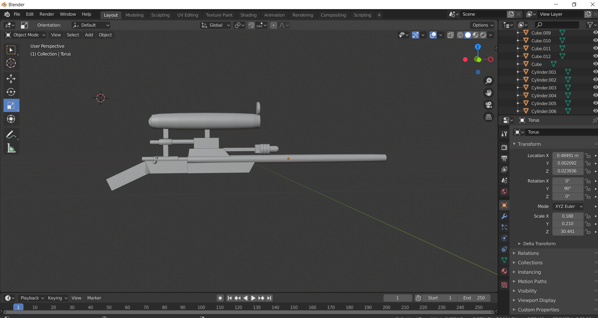
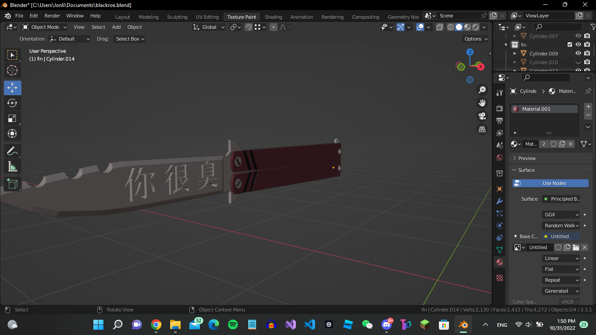

Blender?
Blender is a free 3D modeling software typically used for animation purposes. I started using Blender all the way back around my fifth grade year. Despite having as of writing this, 4 years to improve, I would say my modeling still has room to imrpove. Below is my first ever model, and the other is one of my most recent models. I really pray a noticable difference exists between them. I started making models for both Unity games, and Roblox Games.
 (First Model, In Gray), (Recent Works, Everything Else)